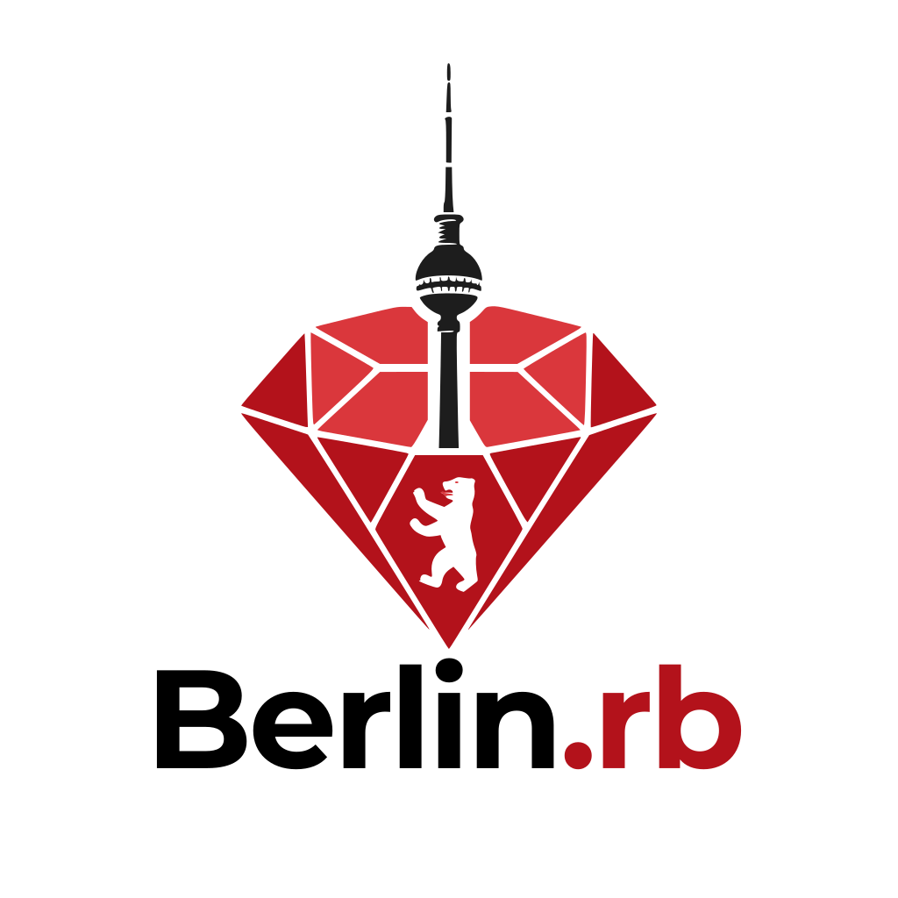

Press kit
Everything you need to mention Berlin.rb somewhere: logo files, a description you can paste as it is, and the facts that stay the same from month to month. Help yourself, no need to ask.
Logos and text in one file, 5 logo files plus a text version of this page.
Logo
{kind=link}
{kind=link}
{kind=link}
{kind=link}

Square
Padded to 1024×1024, for avatars and upload fields that want a square.
{kind=link}
Every file has a transparent background. Use the SVG wherever the format allows it, it stays sharp at any size.
Words
One line
Berlin.rb: a monthly Ruby meetup in Berlin. Free, every second Tuesday. berlinrb.org
One paragraph
Berlin.rb is a monthly meetup for Berlin’s Ruby community. We meet on the second Tuesday of every month for talks, project show-and-tells, and time with other people who write Ruby. It is free and open to everyone, whether you have been writing Ruby for 15 years or you are just curious about the language. Details and registration at berlinrb.org.
The facts
- What
- A monthly meetup for Berlin’s Ruby community. Talks, project show-and-tells, and casual get-togethers.
- When
- The second Tuesday of every month, in the evening.
- Where
- Berlin. The venue changes from month to month, each meetup’s page has the address.
- Price
- Free, and open to anyone interested in Ruby, whatever their experience level.
- Register
- luma.com/berlinrb
- Website
- berlinrb.org
- Contact
- hello@berlinrb.org
- Elsewhere
- YouTube, X, Bluesky, LinkedIn
Photos
We will put photos here after our first meetup. If you need one before then, write to hello@berlinrb.org.
Using all this
Use the logo as it is: please don’t recolour it, stretch it, or rebuild the wordmark, and leave a little clear space around it. Everything on this page is free to use to announce, mention, or link to Berlin.rb. If you need something that isn’t here, ask at hello@berlinrb.org and we will make it.